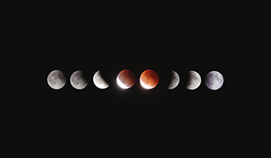
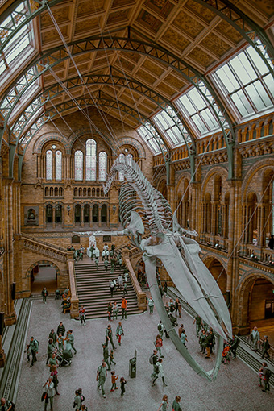
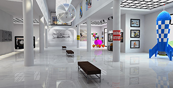
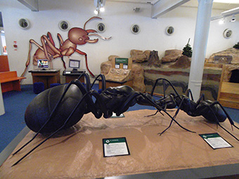

It is our pleasure to announce that Prof Sheila Widnall from the Massachusetts Institute of Technology will be delivering 3 lectures on the development of aeronautics and where the future lies in this exciting ‘space’.
Timing for lectures TBA
Night in the Museum
Are they really alive?
If they really wake up the night might be eventfull.
Get your family together for an exciting night in the museum as you sleep over beside dinosaurs and science displays. Bring your own sleeping bag and get ready to rough it as we go exploring the wonders of science.
Energetica Exhibition on Loan
True power
Power and energy. Bring your phisics!
On loan from the NEMO Science Museum in Amsterdam, the Energetica exhibition is coming to the Community Science Museum. It’s a series of installations that allow visitors to experience the power of the elements as we harness them. From solar energy powering lighting, to ‘Wind Island’ that shows how turbines are able to use and control wind to create power.
Exhibition Spaces
Cosmology
Open all days

The moon has many faces
Explore the wonders of our cosmos. Our fantastic exhibition, ‘The Sky Above Us’, explores the night sky and what we can see and know about the universe around us. We’ll locate the various constellations and galaxies that can be seen and learn a bit about the early navigators who used the stars to travel by.
Follow the journey of our solar exploration: from early Arab traders, to Galileo’s telescope, to the latest exploration of the planets in our solar system.
Evolution
Open all days

Before us the were the rulers
For centuries, philosophers and scientists have wrestled with the question of our origins. Where do we come from and how did we get here? Since Darwin proposed his theory of evolution we have had a framework for exploring and
understanding our place in this world.
Discover the origins of life on this planet and how the species we know today have evolved our time. You can also take some time to meet a few of the creatures who didn’t survive, including our Woolly Mammoth, the Dodos, and a number of dinosaurs too.
Biology and Medicine
Open all days
The hardest working muscle
From micro-organisms to the human body, major breakthroughs in biology are offering us unique insights into the great wonders of the tiny world.
For many people their life expectancy is much longer and their quality of life much improved, thanks to the growth of our understanding of medicine. Over a series of exhibits we explore the history of medicine and take a look at some major breakthroughs including the discovery of penicillin and the first heart transplant.
Many of our great medicinal discoveries have come not only from the lab, but also from observing animals in the wild. Often our fellow creatures have beat us to it.
Robotics and AI
Open all days

Our tech echibition is the most popular
The information revolution is here and robotics and artificial intelligence are the science of the future. From useful home applications of AI to industrial uses of robotics, the future is here. You can even say hello and shake the hand of Rob the Robot.
Ecology
Open all days

Lets be glad they dont get this big
As we learn more and more of the impact humans are having on the planet, the more important it becomes that scientists explore how to create a sustainable future not just for humans but for the whole planet.
In our ecology section of the museum, we unpack the dangers we currently face including global warming, extinction of species, and pollution. But we also focus on the positive ways we can all contribute to a brighter future.